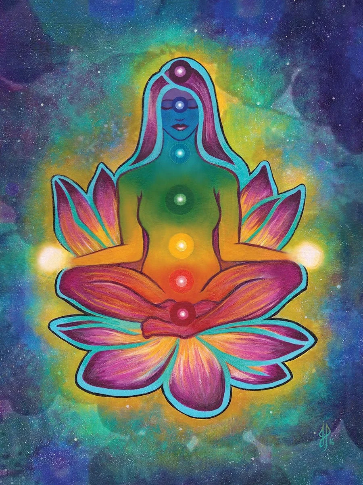
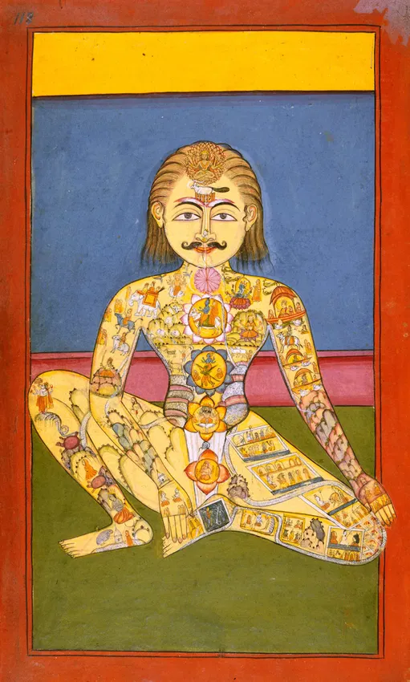
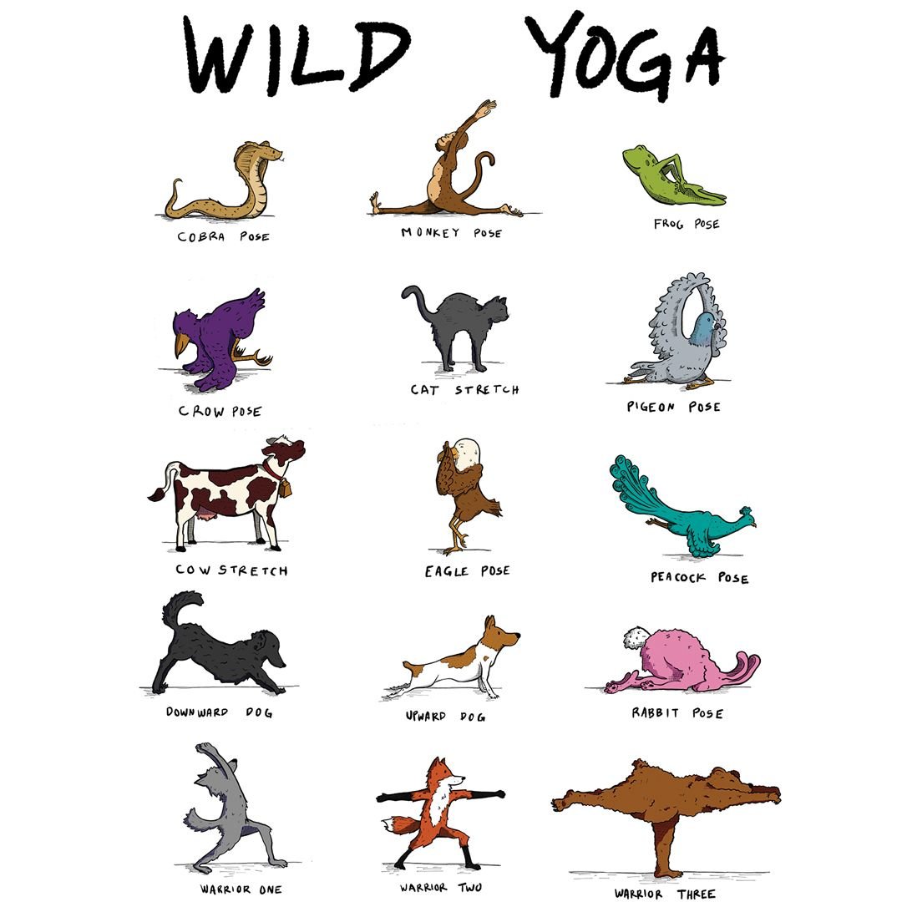
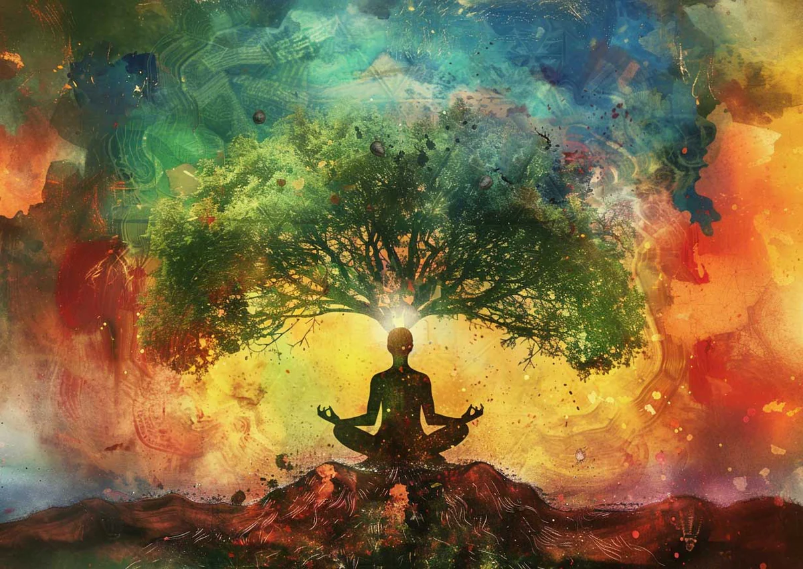
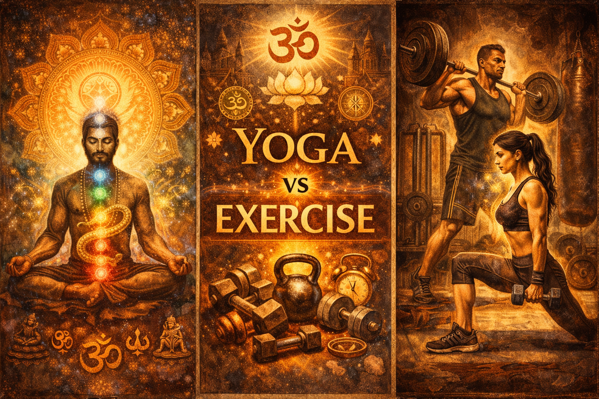

Какво е асана?
"Асана" в йога означава състояние на стабилност, покой и комфорт. Според Йога Сутрите на Патанджали, асаната е: "Sthiram sukham asanam" – „позиция, която е удобна и стабилна". Първоначално тя се е свързвала с подготвяне на тялото за дълга медитация – да седиш спокойно и без усилие.

Асаната в раджа и хатха йога
В раджа йога, асаната е просто удобна седнала поза. Но в хатха йога, това е нещо много повече – асаните са специфични телесни позиции, които отварят енергийните канали и психичните центрове, подготвяйки тялото и ума за по-дълбока практика.
Асаните се превръщат в инструменти за по-висше осъзнаване, предоставяйки стабилна основа за изследване на тялото, дъха, ума и по-висшите състояния на съзнанието. Поради тази причина практиката на асаните е поставена на първо място в хатха йога текстове като Hatha Yoga Pradipika.
В древните йогийски писания се казва, че първоначално е имало 8 400 000 асани, съответстващи на 8 400 000 въплъщения, през които всяка душа трябва да премине, преди да постигне освобождение от цикъла на раждане и смърт.

Вдъхновени от животинското царство
Много от асаните са вдъхновени от животни. Те представят прогресивна еволюция – от най-простата форма на живот до най-комплексната: напълно осъзнатият човек. През вековете великите риши и йоги са наблюдавали природата, опростявали и систематизирали практиките, редуцирайки асаните до няколкостотин, от които само 84 се разглеждат в детайли като най-полезни.
Чрез практикуването им може да се ускори еволюционният път и да се прескочат много кармични етапи само в един живот. Ришите разбирали чрез опит влиянието на определени пози върху хормоналната система – например, поза заек (Шашанкасана) повлиява потока на адреналина, отговарящ за реакцията „бий се или бягай".
Чрез имитиране на движенията на животни, те открили как да поддържат здраве, да балансират енергиите и да отговорят адекватно на предизвикателствата на природата. Животните ги вдъхновили с това как живеят в хармония със своето тяло и среда – знание, което се предава чрез асаните до днес.

Асаните и енергийната система
Висшата цел на йога е пробуждането на Кундалини шакти – еволюционната енергия в човека. Практикуването на асани стимулира чакрите, разпределяйки генерираната енергия на Кундалини в цялото тяло.
Около тридесет и пет асани са специално насочени към тази цел: чакрасана за манипура чакра, сарвангасана за вишудхи чакра, ширшасана за сахасрара чакра и други. Останалите асани регулират и пречистват нади каналите, улеснявайки протичането на прана в цялото тяло.

Тяло и ум – едно цяло
Умът и тялото не са отделни същности, въпреки че често имаме склонността да ги възприемаме така. Грубото проявление на ума е тялото, а фината форма на тялото е умът. Практикуването на асани интегрира и хармонизира тези два аспекта на съществото ни.
И тялото, и умът задържат напрежения или възли – всеки ментален възел има съответстващ физически, мускулен възел, и обратното. Целта на асаната е да освободи тези възли.
Асаните облекчават менталното напрежение, като го адресират на физическо ниво – те действат сомато-психично, от тялото към ума. Например, емоционалното напрежение или потискане може да затегне и блокира нормалната функция на тялото, особено дишането, диафрагмата и белите дробове, което често води до респираторни проблеми и други физически неразположения.

Йога ≠ упражнения
Често йога асаните се възприемат като форма на упражнения, но те не са упражнения в обичайния смисъл. Асаните са техники, които поставят тялото в определени позиции, с цел развитие на осъзнатост, релаксация, концентрация и медитация.
Част от този процес е и поддържането на добро физическо здраве чрез разтягане, масажиране и стимулиране на праничните канали и вътрешните органи. В този смисъл асаната може да се разглежда като допълнение към упражненията, но не и като тяхна замяна.
За да се разбере разликата между асаната и упражненията, трябва да се отбележи, че физическите упражнения налагат полезен стрес върху тялото – без този стрес, мускулите отслабват, костите стават чупливи, понижава се способността на организма да усвоява кислород, появява се инсулинова нечувствителност и се губи способността за реакция при физическо натоварване.
Съществуват съществени разлики в начина, по който асаните и упражненията въздействат на телесните механизми:
При изпълнение на асани дишането и метаболизмът се забавят, консумацията на кислород намалява, а телесната температура спада.
При упражнения дишането и метаболизмът се ускоряват, кислородната консумация се увеличава, а тялото се загрява.
Йога позите забавят катаболизма (разграждането на тъканите), докато упражненията го стимулират. Освен това, асаните имат специфични ефекти върху жлезите и вътрешните органи, както и способността да променят електрохимичната активност на нервната система.

Заключение
Асаните не са просто физически пози – те са врата към по-дълбоко самопознание, вътрешен баланс и духовна трансформация. Те ни учат как да живеем осъзнато, здравословно и в хармония със себе си и с природата.
Заинтересовани ли сте от персонализирана йога практика? Разгледайте нашата Naga Yogi програма за индивидуален подход към хатха йога, или се запишете за безплатна 1:1 консултация.